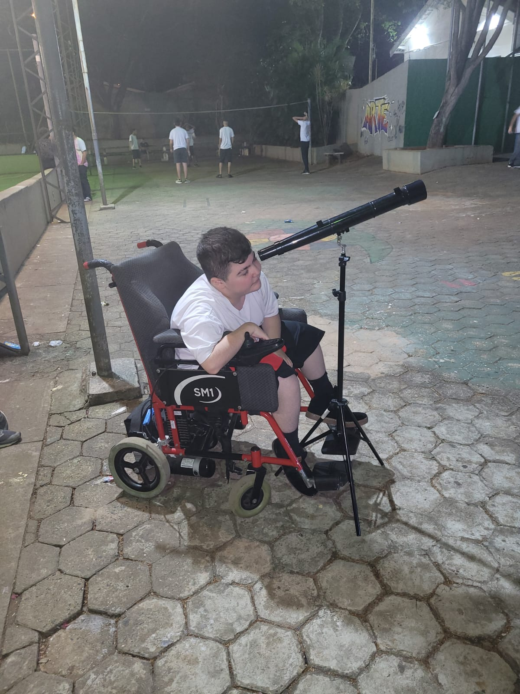
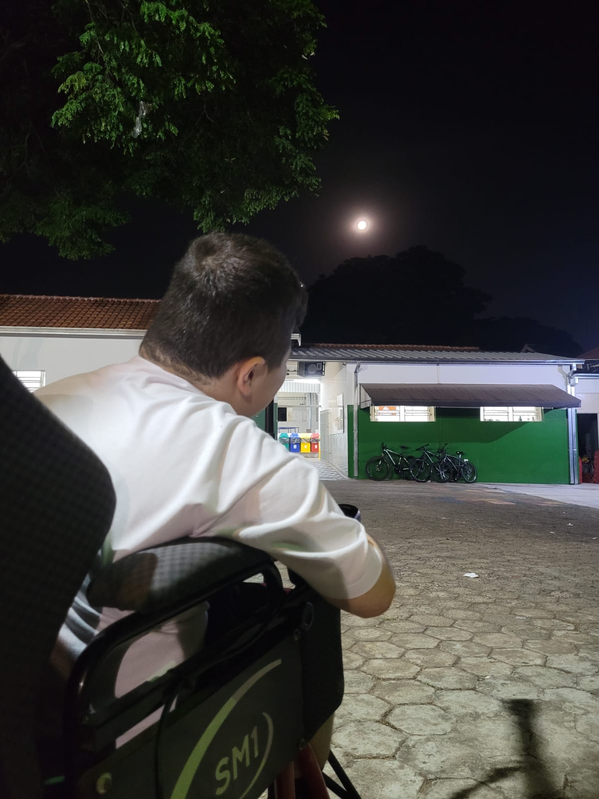
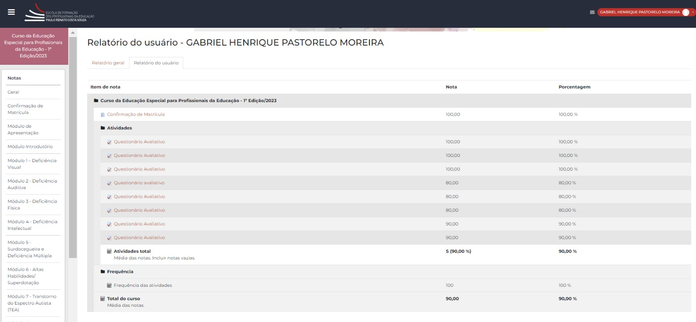
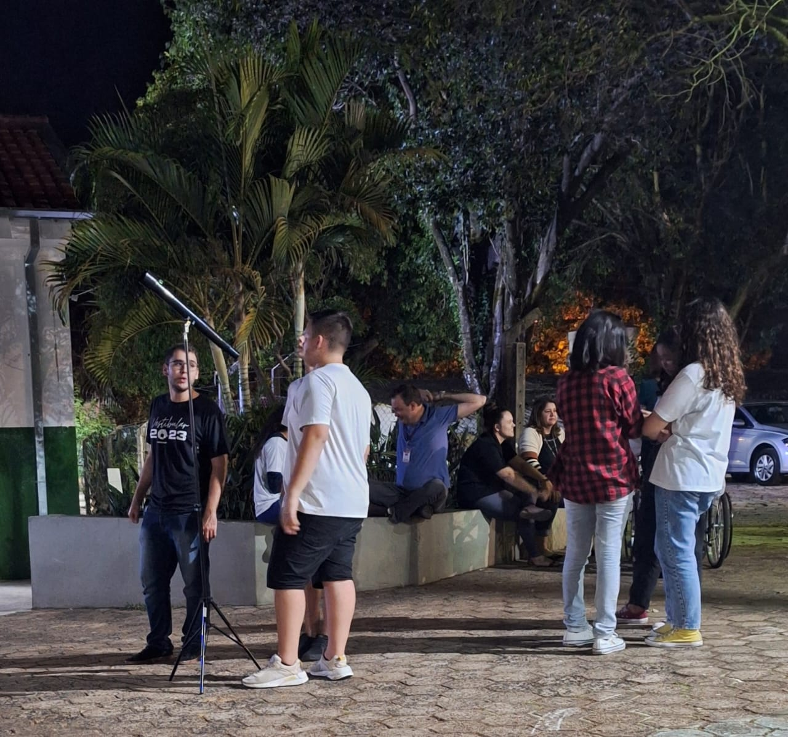

Portfólio de Evidências
Prof. Gabriel Moreira
Física | Matemática | OE | IF
Prof. Gabriel Moreira
Física | Matemática | OE | IF


Atuo como professor na rede estadual desde março de 2021, ainda como aluno do último ano de graduação, estando presente na EE Olympia Barth de Oliveira desde maio do mesmo ano. Em dezembro, me formei em Licenciatura em Física na UNICAMP (Universidade Estadual de Campinas) e, em janeiro, fui alocado nesta mesma escola, que acabara de entrar para o Programa Ensino Integral (PEI). Atualmente, estou cursando o MBA em Gestão Escolar pela ESALQ/USP e disciplinas como estudante especial para o mestrado em Física, na Unicamp. Enquanto professor de Física, Matemática, Orientação de Estudos e Aprofundamentos Curriculares, minha função é atender as expectativas e necessidades para o desenvolvimento integral dos alunos, formando alunos autônomos, solidários e competentes de forma colaborativa com outros professores da escola, traçando planos interdisciplinares para compartilhar desafios e propor estratégias articuladas que respondam às demandas do desenvolvimento integral. Também é meu papel ser atuante nas tutorias conhecendo o Projeto de Vida de cada aluno, contribuindo para que sejam capazes de projetarem seus sonhos, aprimorando-se como pessoas de sucesso na vida pessoal e profissional. Dessa forma, envolvê-los no desenvolvimento e capacidade de projetar em sua vida, tornando-os atores principais de suas próprias decisões. Além disso, é minha responsabilidade ser mediador, facilitador e articulador do conhecimento, provocando o aluno a aprender a partir de seus próprios questionamentos. Colaborar com a equipe gestora no sentido de apontar necessidades de propor projetos e ações inovadoras e se envolver com atividades do programa que extrapolam a sua sala de aula.
No início do ano, enquanto ministrava aulas de Projeto de Vida nos 1os anos, propus a escrita de uma carta para que os alunos refletissem sobre seu passado, como isso moldou seu presente e o que desejam para o futuro. Nesta, os alunos deveriam falar com seu "Eu Futuro", contando sobre seu passado, quem eles eram no presente e quem esperam ser no futuro. No final do ano, os alunos irão retormar suas cartas e refletir sobre suas mudanças. Acesse aqui o Diário de Bordo que evidencia esta atividade
Atividades realizadas com o falecido aluno Guilherme Antônio da Silva no 1ºB e com o aluno Kauan Lucas Camacho do 2ºA, reforçando suas inclusões junto aos estudantes e seu bem-estar em aprender. Além disso, no início do ano, ainda como professor de Projeto de Vida, promovi uma atividade para os alunos refletirem sobre a inclusão do aluno Guilherme em sala de aula. No caso, os estudantes se dividiram em 3 grupos: os que não podiam ver, os que não podiam falar e os que não podiam andar. Na quadra, distribuí bambolês para representar o caminho a ser seguido. O objetivo era que os alunos que não podiam andar e não podiam falar guiassem os que não podiam ver através da fala e do toque, respectivamente, para chegar ao final do percurso sem que saíssem das áreas permitidas. A reflexão desejada era de que todos nós temos limitações, mas se todos ajudarem com o que tiverem à disposição, todos conseguem chegar ao final do percurso. Passe o mouse sobre as imagens para ampliá-las.
 No meu ensino médio, decidi meu Projeto de Vida em uma excursão à Unicamp de Portas Abertas. Por isso, neste ano, organizei a ida ao evento em Campinas no dia 19 de agosto.
No aprofundamento curricular "Máquinas e suas tecnologias", do 3ºA, propus a construção de um motor DC caseiro. Para isso, mostrei aos estudantes o princípio de funcionamento, forneci as ferramentas e dei um prazo de 3 semanas para que a turma montasse e apresentasse o motor construído.
Realizei tutorias individuais quinzenamente com cada tutorado. As evidências também constam na Pasta de Tutoria do professor.
Há 7 anos atrás, quando decidi ser professor, não era claro para mim qual seria meu papel e meu propósito de atuação. As únicas coisas que me motivavam era o bem-estar que eu sentia em estar na escola e poder ajudar meus colegas. Hoje, após alguns anos de faculdade e poucos de experiência, percebo que o que me move é justamente a possibilidade de poder inspirar meus alunos. Por mais que goste muito de Física e Matemática, nunca tive para mim como propósito fazer todos os alunos aprenderem 100% do conteúdo; afinal, todo questionamento "Para o que eu vou usar isso na minha vida?" é válido. Nem todos os alunos vão precisar utilizar Bháskara ou a Lei de Faraday-Neumann-Lenz em suas vidas, mas todos os alunos passarão por decisões e angústias pelas quais passei quando estava com a idade deles. O conteúdo é, sim, importante, por trabalhar um processo cognitivo e um raciocínio lógico que poderão ser utilizados em suas vidas sem que percebam. Entretanto, mais importante que isso, é a inspiração e a motivação em fazer o ambiente que vivem um lugar melhor. Se algum dia tudo isso não fizer mais sentido para mim e o conteúdo for mais importante que inspirar meus estudantes, espero que eu tenha a maturidade de perceber que não tenho mais a agregar nessa profissão. Por enquanto, esse é o meu propósito e que me faz ter ânimo de trabalhar e melhorar a cada dia.
Gabriel Moreira, 15 de outubro de 2023.
Educação e respeito são valores meus, e para avaliar se estou cumprindo com estes, montei um questionário onde os estudantes, de forma anônima, poderiam avaliar minha educação e respeito com eles.
Na última aula do 3º bimestre, nos 1os anos, realizei uma aula diversificada com o uso do planetário, onde os alunos puderam entender melhor as estações do ano, solstícios, equinócios e a razão dos anos bissextos. Além disso, pedi para que os estudantes avaliassem meu domínio sob o conteúdo em um formulário anônimo.
No dia 18/08 (sexta-feira), participei de uma formação sobre o Khan Academy e seu uso nas aulas de matemática. Além disso, realizei cursos EFAPE sobre os princípios do PEI.
Para agendar as reuniões de pais e responsáveis, utilizei uma plataforma que agiliza o processo de agendamento. Além disso, utilizei uma planilha para sistematizar as notas dos alunos.
Para facilitar a visualização e entendimento da Lei de Faraday-Neumann-Lenz, utilizei simuladores do PhET com os estudantes do 2º ano. Acesse aqui a atividade montada para amparar os estudantes no uso do simulador.
Montei um questionário onde os estudantes, de forma anônima, poderiam avaliar a coerência das provas com as explicações. Acesse aqui o formulário.
Atividade com a turma do aprofundamento curricular "Dinâmica e Equilíbrio" do 2ºA sobre as aplicações da Biomecânica para o profissional de Educação Física.
Apresentação da turma do aprofundamento curricular "Dinâmica e Equilíbrio" do 2ºA sobre "Como o estudo da Biomecânica pode promover a qualidade de vida?", "Biomecânica, equilíbrio postural e obesidade" e "Como andar descalço pode evitar lesões durante a corrida?".
Atividade na quadra com a ajuda da profa. Sabrina (Ed. Física) para estudo do Lançamento Oblíquo.
Relatório de notas dos cursos na EFAPE.
Atualmente, estou matriculado em um curso de pós-graduação MBA em Gestão Escolar, pela USP/Esalq. Acesse aqui o atestado de matrícula.
Recebi muitos comentários positivos na Devolutiva da Avaliação360 de 2022, evidenciando um bom trabalho frente aos alunos e junto aos professores. Como ponto de atenção, ressalto os comentários sobre as aulas por vezes monótonas, mostrando que, para continuar minha evolução, é importante continuar trabalhando a dinâmica das minhas aulas.
Acesse aqui os comentários feitos na devolutiva da Avaliação360 de 2022. Além disso, abaixo consta as devolutivas de aula feita pelos estudantes este ano.
Propus uma metodologia ativa com base nos conceitos de atenção vistos no MBA, onde os alunos, a partir de uma pergunta-chave, deveriam pensar em 5 palavras relacionadas a esta no tempo de 1 minuto. Posteriormente, em 5 minutos, os alunos deveriam, com as 5 palavras, montar uma frase para responder a pergunta-chave. Acesse aqui o Diário de Bordo Semanal de uma aplicação desta metodologia.
Acesse aqui os documentos gerais feitos neste ano letivo. Além disso, o desenvolvimento de todos os documentos estão explícitos na minha Agenda.
Presente site.
As duas premissas a se desenvolverem neste ano segundo meu PIAF são Protagonismo e Corresponsabilidade, conforme cópia do mesmo: "O profissional precisa atentar-se às competências/premissas “Corresponsabilidade” e” Protagonismo”. Em relação à “Corresponsabilidade”, precisa desenvolver projetos interdisciplinares. No “Protagonismo”, é importante apropriar-se do uso de tecnologias no contexto escolar, buscando formações dentro e fora da escola de modo a consolidar sua aprendizagem, e para que ele não se sentir sobrepujado.".
Neste ano, para evoluir as duas premissas, tratei de fazer atividades em conjunto com outras áreas, como com a profa. Sabrina, e busquei me promover através do estudo (MBA, cursos EFAPE) e utilizando tecnologias, como este site que desenvolvi para replicar as minhas evidências.
Momentos de Pedagogia da Presença. Além disso, no início do ano, intermediei a participação de um aluno (Andrey da Silva), que tem o sonho de ser lutador, em um projeto social de Jiu-Jitsu.
Sempre estive aberto para dúvidas e reclamações de alunos e professores em meu WhatsApp. Além disso, montei um questionário para que os alunos pudessem me avaliar de forma anônima. Acesse aqui o formulário.
No mês de agosto, o professor Osmar me solicitou ajuda para escrever um projeto para um passeio pedagógico.
Atividade na quadra com a ajuda da profa. Sabrina (Ed. Física) para estudo do Lançamento Oblíquo.
Registro de Reuniões de Pais.
Durante o ano, compartilhei com meus colegas professores variadas atividades para o momento de Tutoria Coletiva.
Crei um grupo fechado com alunos e responsáveis, onde apenas eu poderia enviar mensagens, para informar sobre datas e mensagens importantes. Consta também na imagem uma foto de uma ficha de reunião com responsável assinada.
Propus uma alternativa à apresentada pela diretora Sandra para o momento de Tutoria Coletiva.
Devido ao pouco tempo para abordar um conceito complexo (função exponencial, matemática 1º ano), propus uma atividade diversificada onde os estudantes deveriam construir Torres de Hanói para calcular a quantidade de movimentos para resolver o problema em função da quantidade de discos.
Atividades e avaliações de Nivelamento. Acesse aqui a pasta com os Planos de Ação de Nivelamento e aqui a evolução dos engajamentos no 2º semestre como exemplo.
Propus uma metodologia ativa com base nos conceitos de atenção vistos no MBA, onde os alunos, a partir de uma pergunta-chave, deveriam pensar em 5 palavras relacionadas a esta no tempo de 1 minuto. Posteriormente, em 5 minutos, os alunos deveriam, com as 5 palavras, montar uma frase para responder a pergunta-chave. Acesse aqui o Diário de Bordo Semanal de uma aplicação desta metodologia.
Uso de materiais recicláveis para a construção do Motor DC com a turma de aprofundamento curricular "Máquinas e suas tecnologias" do 3ºA. Além disso, no aprofundamento curricular "Conservação do Movimento" do 2ºA, foi construído um Giroscópio com materiais recicláveis.
Presente site. Além disso, todos os documentos estão em minha pasta do Drive vide foto, disponível para acesso.
Após a formação DE sobre o Khan Academy, realizei a replicação na escola com os professores de matemática em ATPCA.
Compartilhei com um colega, professor da EE Prof. Ary Menegatto, a atividade realizada com a Torre de Hanói.
Fui convidado para ser paraninfo do 3º A e divulguei a foto do convite.